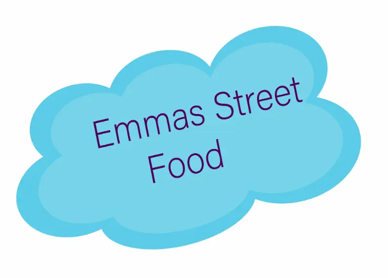

Mit Spil
Ideen til min spil var simpel og baseret på min elsket kæledyr. Spillereglerne er enkelte og nemme at forstå. Jeg skitsede i hånden mit hovedkarakter og de diverse elementer i spillet og spillets scene. Jeg valgte den Kawaii stil da spillet har både en "nuttet" hovedkarakter og elementer, spillets scene (forgrund, bagrund og mellemgrund) krævede lyse og indbydende farver.
Efter at jeg havde skitset mine elementer og scene, rentegnede jeg i Adobe Illustrator. Titelskærm, spilskærm med figur og UI-elementer, slutskærm (både vinder og taber) og alle artborards blev exportere i SVG format. SVG filer er et internetvenligt vektorfilformat, det betyder, at vektorfiler som SVG kan tilpasses markant i størrelse uden at miste noget i kvalitet, hvilket gør dem til den perfekt løsning for denne opgave.


Jeg brugte en udvidelse (extension) til VSCode, draw.io som gør at man kan tegne diagrammer direkte i VSCode og have dem liggende sammen med mine filer. Denne udvidelse brugte jeg til at tegne en aktivitetsdiagram og en State Machine diagram. Til begge diagramer blev vi introduceret til den "Unified Modeling Language". UML tilbyder en måde at visualisere tegninger i et diagram, herunder de elementer jeg skulle bruge, hver aktivitet, de individuelle komponenter og hvordan de kan interagere med andre softwarekomponenter, mm.
Skærm er i en 16/9 format (hele skærm), og det er også det internationale standard billedformat for UHD, HDTV, Full HD og SD digitalt tv . For at bygge spilelementerne brugte jeg "containere" og "sprites". På denne måde kan man animere containere og sprite hver for sig. For at kunne definere størrelsen på containeren i min CSS skulle jeg kende figurens aspect-ratio, dvs. svg´ens højde/bredde forhold. Alle skærm, samt de non-diegetic UI elementer har "position: absolute". Jeg brugte flyv-forsvind animation da det skulle give et billede af, at hovedkarakteren "fandt" de gode og dårlige elementer "på vej".

Javascript brugte jeg til at loade siden, tilføje og fjerne klasser og at kontrollere DOM Events, så som "animationstart", "animationend", "mousedown", mm. HTML DOM Events tillader JavaScript at registrere forskellige event handlers på elementer i et HTML-dokument. De bruges normalt i kombination med funktioner, og funktionen vil ikke blive udført før hændelsen indtræffer (såsom når en bruger klikker på en knap).
